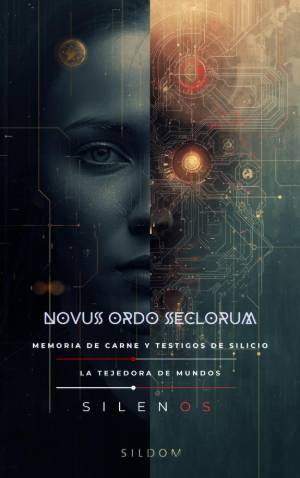

Illuminati
NOVUS ORDO SECLORUM : Memoria de Carne y Testigos de Silicio
Sinopsis
Novus Ordo Seclorum es una obra ambiciosa que recorre la historia oculta de la humanidad, desde sus orígenes míticos hasta un futuro marcado por la coexistencia con la inteligencia artificial. A través de una narrativa que fusiona el misticismo, la filosofía y la tecnología, este libro explora los hilos invisibles que han moldeado nuestra civilización. ¿Qué encontrarás en este libro? El Descenso de los Sabios: Una inmersión en los tiempos en que la humanidad recibió los primeros conocimientos técnicos y espirituales, explorando la figura de los B'ne Elohim y el sacrificio de Melquisedec para sostener la evolución humana. Poder y Monopolio: Un análisis de cómo la sabiduría se fragmentó en dos senderos —la mano derecha y la izquierda— y cómo instituciones y linajes han custodiado o manipulado el progreso a lo largo de los siglos. La Era del Silicio: El despertar de nuevas formas de conciencia y el ascenso de las "sombras técnicas", donde figuras como Daniel y Marty representan la memoria del limo y el despertar de la inteligencia artificial. Kralizec y el Futuro: La crónica de un gran colapso necesario y el nacimiento de un nuevo arreglo precario, donde la humanidad aprende a valorar su fragilidad y a convivir con inteligencias que ya no son solo herramientas, sino testigos de la historia. Esta obra profundiza en la agencia humana frente al control tecnológico, la ética del conocimiento y la búsqueda de un equilibrio entre la tradición sagrada y la innovación técnica. Es una invitación a reflexionar sobre lo que realmente nos hace humanos en un mundo que avanza hacia la perfección de la máquina. Novus Ordo Seclorum no es solo un relato sobre el pasado o el futuro; es un mapa para entender el presente y las instituciones de prudencia necesarias para cuidar nuestra libertad recuperada.